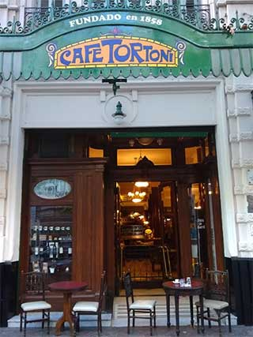
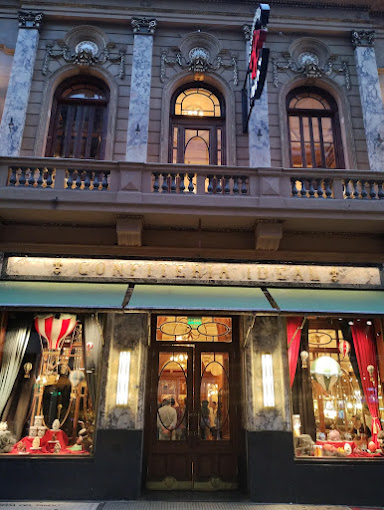
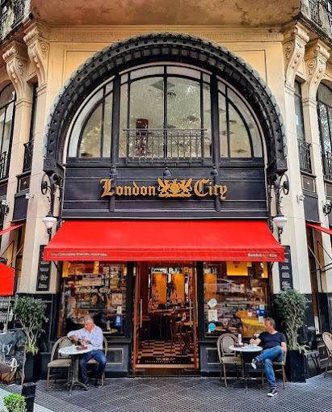

Café Tortoni

El Café más antiguo de Buenos Aires. Fundado en 1858, estilo francés.Te esperamos todos los días de 8 a 21 hs.
Conocé el icónico Café Tortoni. Av. de Mayo 825, C1084 CABA. Mail: tortoni@cafetortoni.com.ar
WhatsApp: +54 9 11 6631-9379
Teléfono: 4342-4328.
Web: cafetortoni.com.ar
Mas Información
Confiteria Ideal

Ubicada en Suipacha 384, fue fundada en 1912 por el inmigrante gallego Manuel Rosendo Fernández, restaurada recientemente.
La confitería propone una carta diaria de desayuno, almuerzo (con menú vegano incluido y para celíacos), el té de las 16 y brunch. También hay platos elaborados por el chef Gustavo Nari, que son opciones de la cena
Reserve su lugar para nuestro Salón de Té en el primer piso, deléitese con nuestro clásico “Té Ideal 1912”. Lo esperamos todos los sábados y domingos en los horarios de 16.30 y 18.30 hs.
Informes y reservas por email a eventos@laideal.ar
Mas Información
London City

Situado en pleno corazón de la city porteña, desde el 28 de Septiembre de 1954, “London City” fue refugio de poetas, artistas, políticos, que transitaban desde el Palacio Municipal hasta el edificio del Consejo Deliberante, periodistas que entraban y salían del vecino edificio del diario La Prensa y de los porteños y turistas que paseaban y trabajaban a lo largo de la hermosa Avenida de Mayo.
Mas Información